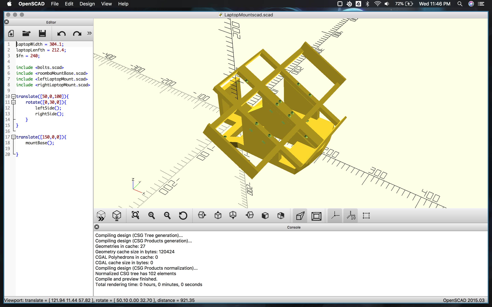

Wattzon the Autonomous Robot
by Jacob Butler
Posted on October 30, 2018 at 11:30 PM
Project Goals
Wattzon is an semi-autonomous robot designed to explore two different problems in robot autonomy. The first of these is using a camera to do object/obstacle detection. Put simply, this is the problem how a robot can detect objects in the world around it independent of outside information (such as GPS or preloaded maps), and determine if these objects it detects are potential obstacles which will need to be avoid by mean of a camera using light from the visual spectrum or outside of the range of human sight. The second problem this project explores is path planning. More specifically, Wattzan attempts to tackles the problem of getting from a starting point to some final point, with no information about the world around it other than what is obtain by the solution to the first problem (a dynamic, uncertain environment).
What Others Have Done
Object Detection
There are two main aspects of object detection when used for robot path planning. The first is distinguishing individual objects from each other and the second is determining where the object is located relative to the location of the camera which is viewing the object.
For identifying individual object in an RBG camera image there are numerous different approaches which use either a machine learning or a deep learning approach to do object identificaion (See Important Links for a links to the wikipedia article on object detection).
Object Location
For determining the location of an object in 3D space from camera data, one approach commanly used is to use the parallax of the pixels in an image to determine the depth of each pixel. This creates an image which contains depth data about everything in the image. This depth data is then projected into 3D space to create what is called a point cloud, which is effectively a digital representation of the 3D world viewed by the camera. This information is then used to determine the location of objects seen by the camera
Path Planning
The type of path planning proposed in this project is called path planning in an unknown environment and is an open research problem. In general, many solutions to this sort of problem are based on or are a generalization of graph searching algorithms such as A* or Dijkstra's algorthims.
My Approach
There where three parts that went into creating Wattzon. First was creating a robot that could be controlled by either a micro controller or a PC. Second was mounting a camera on the robot which could be used for detecting obstacles which Wattzon would need to avoid. Third was writing the control software to make Wattzon avoid any obstacle in his path from his starting point to his final destination.
Robot Base
For the robot base I used the iRobot Create 2. This is a roomba sold by iRobot designed for modification as a base for robotic experiments and educational purposes. It is controlled via opcodes sent via a serial port on the top of the robot. It can be connected to a PC via USB or to a micro controller via 10 pins on the plug.
To handle controlling the robot and processing image data, I decided to use my 13" macbook pro. Not only is the i7 more powerful and able to handle a higher frame rate form a camera but the screen and keyboard on the laptop also make debugging easier. In order to mount it onto the roomba, I created a bracket using OpenSCAD (source code can be found in the git repo for this project). It can't be seen very well in the image below but the bracket is made of three pieces which are bolted together to make printing faster and possible on smaller 3D printers.
To control the roomba, I wrote a simple C++ library (see Important Links for git repo, library in include/roomba.hpp) to turn the roomba on and off, set its forward velocity (in mm/s), tell it to turn at a given velocity which makes it turn in place (I do not allow for turning while moving forward to make tracking the roomba easier), as well as get sensor data from the front bumper and wheels, and wheel overcurrent. Additional, the library can keep track of the roomba's position relative to its initial start position using an update function which takes the number of second since it was last updated as a float, and using the forward and turning velocity updates the position and direction the roomba is facing.
Image Processing and Object detection
After doing some search, I decided to use Intel's realsense D435 Depth Camera as the camera for the project. It is relatively small and has two m3 bolts on the back for ease of mounting. It also has two RGB cameras along with an infrared projector to enhance the depth data. It also has the advantage of being powered by only USB making it easy to plug into the macbook for use on the robot. It also has an open source SDK which is relatively easy to use (though installing it on mac was challenging)
Below can be seen an image of the depth data for a camera of a chair in my bedroom. The depth information in the pixels of such an image can be accessed frame by frame using the realsense SDK. In order to keep the scope this project managable in the time frame set for it, I opted to ignore object recognition as a whole, and instead sample every 16th pixel horizontally, and 30th pixel vertically. If any of the pixel return depth data less than 0.3m, then a bool is set to true which indicates that there is an object in front of Wattzon.

It should be noted that, as the above images indicates, there is a region near the base of the camera where the floor is that always has depth data less than 0.3m. This could be handled by using the 2D coordinates of the pixels in the image and the depth data to do a 3D project and determine the true distance to the floor. However a quick and dirty way to fix this problem is to just cut that region off from the image and ignore it. I decided to use the quick and dirty method which works in almost all cases.
Path Planning
For path planning Wattzon, is told a location (which is hardcored in the example in the git repo) that is his target location. He then uses a method based on what is called real-time local path planning with a slight variation. Real-time local path planning work as follws: The robot takes the most direct route to it target location. If it sees an obstacle in it path, it attempts to find a route around the obstacle which takes it nearer to it target location. An optimal route around an obsticle can be calculated in different ways, which brings rise to many different methods for doing real-time path planning. Since Wattzon doesn't know anything about the world around him other than if there is an object he is about to hit, some assumption are made. Wattzon uses to following algorithm to determine what to do if it sees an obstacle:
-
Is there an obstacle in my path? If not head toward target location. If yes go to 2.
-
If I turn 45 degrees left or right and travel the distance that the obstacle was from me, does turning left of right bring me closer to my target.
-
Turn in the direction that took me closer and go forward the distance that the object was from me.
-
Am I at my target location? If yes stop. If no got to 1.
While this alorithm is far from the most optimal solution, it does a good job of using the limited sensory data which Wattzon get from the method used for processing image data and not having to rotate left and right every time Wattzon sees an obsticle in his path.
Conclusions
The Good
The most important thing that went well is Wattzon actually works. As you can see in the video below, he avoids the two boxs in the middle of the floor and then goes to the location in front of the bookshelf which was his target location.
What I Would Do Differently
Despite Wattzon working for the most part there are many thing I would do differently if I were to start over gain from the start. The first of these being the camera location. Since the camera is relatively close to the front of the robot, Wattzon cannot get depth information on objects that are close to him. I would mount the camera closer to the back of the robot to help reduce this issue (though doing this might introduce the additional complications of robot seeing its own base instead of the floor right in front of it).
I would also do environment mapping with a point-cloud system. The main reason being to use this to determine Wattzon location. Using wheel telemetry is problematic since it can be inaccurate, and these inaccuracies will build up. Also Wattzon has a tendency to drift off to the right, especially on carpet. Since there is no way for him to know direction other than wheel telemetry, there is no way to correct this. If a point-cloud system was used this could be used to correct these inaccuracies as well as inaccuracies in rotation.
Finally, I would have Wattzon do left and right scanning when he encountered an obsticle. Since he would be using a point-cloud system, this would allow for Wattzon for determine the size and shape of the obsticle ahead, and from there decide which path would take him closer to his target location.